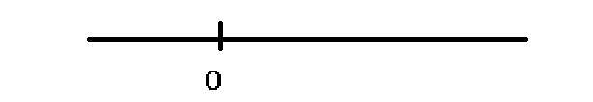
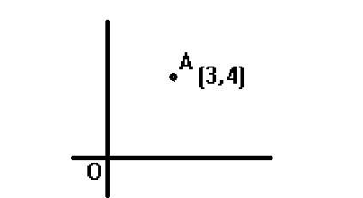
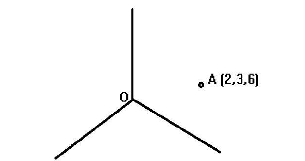
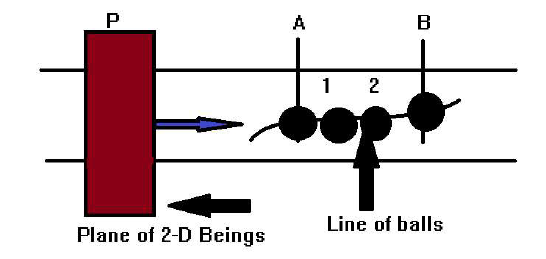
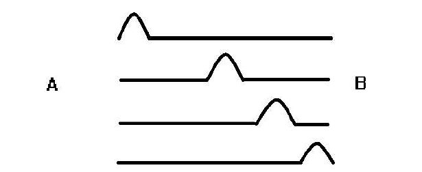
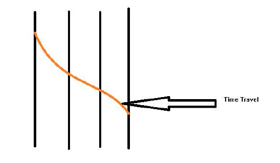
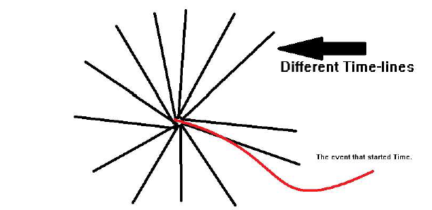

Dimension. This word is generally not taken into account
when we talk about mysteries and fictions (at least for
now), like time travel. But this word holds in it many
truths. So, I would like to devote a writing on this topic.
So, let us start with the definition of Dimension. In
general, dimensions denote the position of particle (Both
material and astral). To understand this better, consider
the senario. Suppose, you are on a line. Now you fix any
point on it and call it origin, and now all the distances
measured will be simply the distance of the point from that
so-called origin.

So, that's the idea. Now, let us move further and consider
the second dimension. Now consider that you are on a
plate. So, you have two degrees of freedom. You again fix
any arbitary point to be your origin and all the distances
you measure are the distances from this point.
So, we can say that an ant is at a distance of 5 units from
O. We further go on to simplify the senario. We now
consider two mutually perpendicular lines which meet at
origin, and call this the Axes. Now, we can measure the
distances from these two lines. And, now we can say that
the ant is at the co-ordinate (3,4).

Now, if you understood the concept, We can move to the
third dimension. Now consider the world in which you live.
This spatial world has three visible dimensions. If we fix
any arbitary point in space, and consider three mutually
perpendicular lines (any three intersecting non-coplanar
lines would suffice, but for simplificaltion, we consider
perpendicular lines), meeting at O, we can find the
distances of objects from these lines and know the
position. So, now we can say that an ant is at the position
(2,3,6). And we find that the ant's distance from origin is
7 units.

Let us now move further. This was the introuction to
dimensions, and these were what we experience. Let us try
to dig deeper.
Now, consider the ant. if we say that the ant is at
(2,3,6), would that be complete information? Maybe not.
Consider the fact that the ant was present at A, at any
particular time T. So the modification would be that the
ant is at (2,3,6,T). But, still we cannot gurantee that the
information is complete, because we cannot prove what we
don't have. So, our modern science cannot provide
information beyond this.
So, let us head towards The Ancients Myths (So called).
Professor Stephen Hawking predicted as many as 11
dimensions to be present. But, if we consider our texts, it
has been stated that there are as many as 64 dimensions
in the universe. Now, if we consider 64, it is a very good
number.
But, we still haven't got a grasp on this term. What does
it mean to know more dimensions, or why should it effect
us. I think that it should affect us, because all of this
humanity may be based on the very knowledge of
dimensions.
It has been said that, humans have chakras in them,
vertically aligned in the body. I know it sounds absurd, but
so do many other things. Now, to give you some
observations. There was a TV serial called 'Shaktiman', in
which the person lights all the chakras and becomes
invulnerable. Also, in the very famous Hanuman- Chalisa,
there is a line, "Asta-siddhi, nav-nidhi ke daata", If you
have ever thought what these Siddhis mean.
Also depicted in many texts, Siddhi is a process to achieve
greater control over body. It is also said that everyone
who is born must die, but it contradicts the saying that
Hanuman is immortal. Why is Hanuman considered
immortal? It is simply because of the fact that he lighted
all his chakras.
But, what happens when these chakras are lighted. So, we
have to undertand a fact that our body is made up of same
material as the universe. We are part of the universe, and
till we are ignorant of this, our chakras are closed.
Opening chakra, connects a person to the nature, and more
and more one connects to the nature, more powerful they
become. Now, what happens is that when a person
meditates, he goes inside himself to find the truth and
then comes the enlightenment that he is not different from
nature.
And, so with each chakra opening, he becomes a higher
dimensional being. Each chakra corresponds to 8
dimensions. And opening all 8 chakras makes a person a 64-
Dimensional being. Sounds magnificent. But now another
question arises. What is a multi-dimensional being and what
is special about him.
So, let us focus on that. To understand this, let us
consider an example. Suppose that there are twodimensional
beings, those which live in two dimensions.
What happens, when you throw a ball through their plane?
What do they see? They will see a circle, which initially
enlarges, reaches a maximum and the recedes. Now, this
phenomena cannot be explained by their physics, and they
will deem this to be a miracle. But, it can be goverened by
our laws of physics. So, we are 3 dimensional beings, who
can create miracles in two dimensional world.
What if we use this analogy for our dimension? What if
there are 4 dimensional beings and their laws are very
different than ours, and what we consider miracles, might
just be Physics to them.
Let us try to understand this through an example. So, one
question has been talked a lot about. Is the future fixed,
or does it depends on our actions?
The answer, that most people tell, is that their actions
define their future, because they want to feel in control of
their future. But, is it the truth? Let us consider the
other case, that the future is fixed.
Take this example-

Consider a plane P, on which two dimensional beings reside.
And consider a line of infinite discs, perfectly merging into
each other (four of which are magnified). Now, consider
that the plane moves from left to right. What does the
two dimensional being observe?
First the plane comes to position A, then goes to position
1, then position 2 and then position B. What the two
dimensional being observes is that the disc is moving from
A to B, and the disc will only reach B, if it has left A. It
sees the entire motion of the disc from A to B, and infers
that the path is arbitary. But what we observe, is
completely different. We see that the discs were already
present, even before the plane had arrived, and it is the
plane, which simply passes through the discs. And since we
see all the discs simultaneously, we say that presence of
disc at B has no relation to the presence of disc at A. And
so we come to the conclusion that the position of discs
were predetermined, and no events of plane P has altered
the discs.
Now, consider the same analogy, to us. Suppose there are
4-Dimensional beings looking at us. For those 4-D beings,
time would simply be a spatial co-ordinate, and similar to
the discs, they would be able to see an event, throughout,
without it depending on any other event, similar to previous
analogy, that all the discs are simultaneously present. So,
following this theory, all that we do and are doing, is predetermined,
and it is not our actions, that make the
difference. That means, all that we do, is pre-decided and
we are just moving through the events.
Now, this brings us to the next question. What are We?
Self, this has been a topic of talks from the beginning of
time. What are we actually? And when are we born? Is it
when the sperm meets Ova, or when a child comes out of
womb, or some other state? We will try to answer that
question.
What I suppose is that we are similar to the 2-D beings,
which move on plate. Let us go deeper.
When I said that all the events are pre-decided, I meant
that, even your bodily actions are pre-decided. For
example, you jumping on a table, on a certain date, at a
certain time, is predecided. So, did you choose to jump?
What if you did not jump? The answer is actually pretty
simple. You did not choose to jump, and it could not have
happened that you would not jump. If you wouldn't,then
that would simply mean that it was predecided that you
would not jump.
Following this condition, we now try to define Self, or
rather sometime called soul. We are just like a wave on a
string, which moves forward along the string and provides
sense to the string, without hampering its properties.

And all the Soul that is talked about is just a sense, an
energy, as it is defined, and this is in consistency with the
definition of Soul.
Now we come to the next question, when are we born?
When the wave is created at A, there is not one particular
point, which is said to be the origin of wave, similarly, it is
not a particular point at which we are born. It is the
entire process of merging the soul with body, and creating
what I like to call, "THE WAVE OF LIFE."
But, this would also mean that the soul is not eternal, it
finishes, as soon as the string is over. But, that is not just
what finishing means, is it? Since wave is an energy, it just
merges with the nature, and does not particularly
"Finishes".
The next problem, that can be discussed using the concept
of Dimensions, is TIME TRAVEL.
Now, we come to the most mind-boggling topic, the TIME.
Since we are talking about predecided events, what does
time particularly mean? It is a bit difficult to understand.
Time is just the wave's property, and cannot be defined
exactly. What we are more interesed, is on the topic of
time travel.
When this topic comes, it brings along new problems, some
of which we are going to discuss.
1. The Grandfather Paradox- If Time travel is possible,
what would happen, if someone goes to the past, and kills
his grandfather, before his marriage, because without
marriage, the person would not be born and can-not kill the
grandfather. So, what happens here? It is clearly a
Paradox.
2. If Time travel is possible, why don't we have a time
traveller already?
We will come back to these questions, but first let us
discuss the theory. So, as I have supposed, that all events
are predecided, is there really no choice? That's not the
truth. We do have choices, but for all of our choices,
there are different timelines, already established and going
on with us. We discuss the theory in detail, but first, I
would like to give a postulate-
"OUR PAST CANNOT DEPEND ON OUR FUTURE."
What really happens is that, at Big Bang, or some other
event, time started. Time came to existence, and all of it
came simultaneously, and due to different choices that the
nature has, it came in various forms, each a slightly
different from each other. In one time-line, one electron
spin may be different than the other, and this sets up a
chain reaction, and the entire time-line changes.
Now, if we say that time travel is possible, it may happen
that, when the fabric of reality is torn, we may end up in
any of the timelines, and not necessarily in ours. And
suppose that the person present there looks like your
grandfather, and you kill him, nothing will change, because
you did not kill your grandfather, and as to speak for that
timeline, it was predecided that you would come on that
particular time, and kill that particular man.
Now, one may ask that, even though there is a very low
probablity that we end up in our own timeline, what if we
do, and kill the grandfather, what then?
So, as I have already discussed that every event is
predecided, it would be predecided that you end up in your
own timeline. And, if nature allows that, it may lead to
erasing of your timeline. But of course, the probablity to
this is 1/infinity.
That is what happens when we ask the question, why don't
we have time travellers?
Even if a time machine is invented, and with all the
problems, can move through time-lines, the probablity that
it ends up in our time-line is 1/infinity. This is probably
why we don't see time travellers.
This can also lead to another conclusion. What if we
already had time travellers?
GODS. It may be possible, that they came from the
future, and planted civilization on Earth, in our timeline,
and went away, and the probablity that they will come back
is also 1/infinity. That is why we are not able to get in
contact with any.
Finally, I come to the conclusion that, all that we do, and
all that we think we will do, is pre-decided. We also
discussed Time Travel, and this theory seems to solve the
paradox. But, still this has many shortcomings, that we will
try to rectify over TIME.

